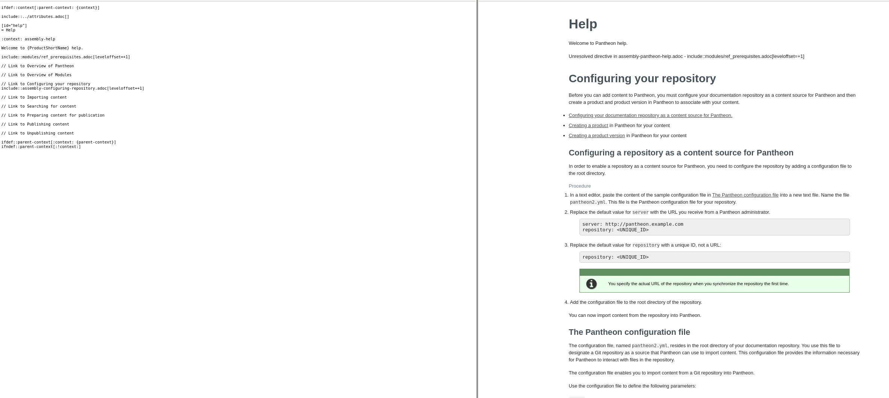
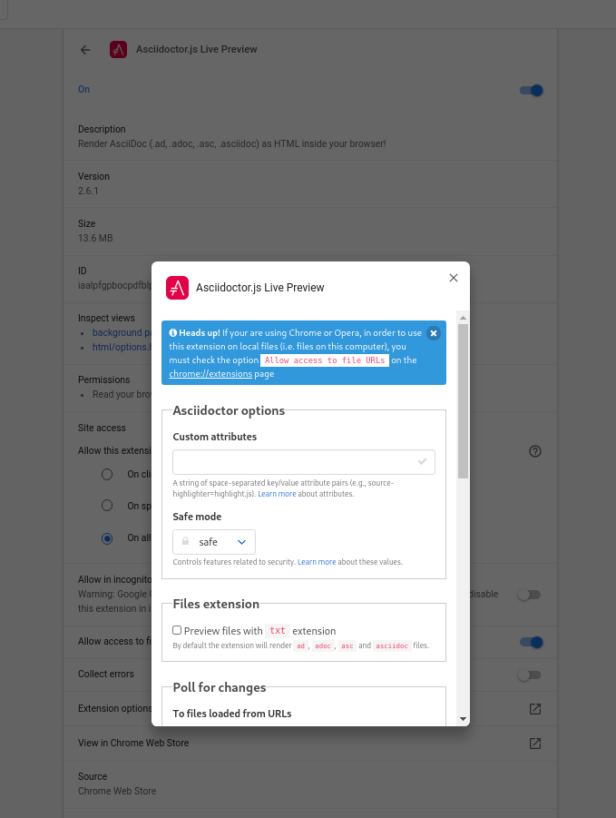

Using the Chrome AsciiDoc preview extension
| The extension is named Asciidoctor.js Live Preview and is also available for Firefox, but there are known issues. |
If you have ever used asciidoctor to generate a preview of an adoc file, you might be interested in this Chrome extension.
It provides a native asciidoctor preview in your browser without generating a html file.
You can also use it to preview files from GitHub and GitLab.
-
Chrome browser
-
an AsciiDoc file
Installing the Asciidoctor.js Live Preview extension in Chrome
After installing the Asciidoctor.js Live Preview extension, you can test it out with files on GitHub.
-
Install the extension from the chrome web store.
-
Check that it is working by browsing the following file on GitHub:
You should be able to toggle the rendering by clicking the extension icon in your chrome toolbar:

Note the following:
* The raw file contains the include statement to link the content required for this guide.
* The rendered content shows that included content.
Configuring the Asciidoctor.js Live Preview extension
By default, Chrome extensions cannot see files on your local hard disk. You must give the extension that permission to use it for previewing content you are editing.
-
Right click on the extension icon and choose Options.

The options listed are specific to this extension, see example configuration for more information.
-
Dismiss the Options pop-up to reveal the extension configuration page.
-
Enable Allow access to file URLs to enable access to your local files.
You can now drag and drop files onto your Chrome browser to preview content.